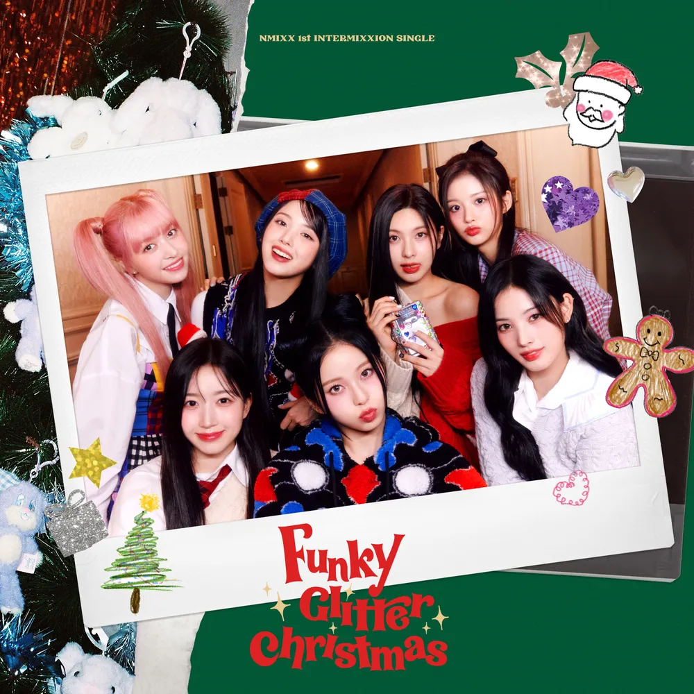
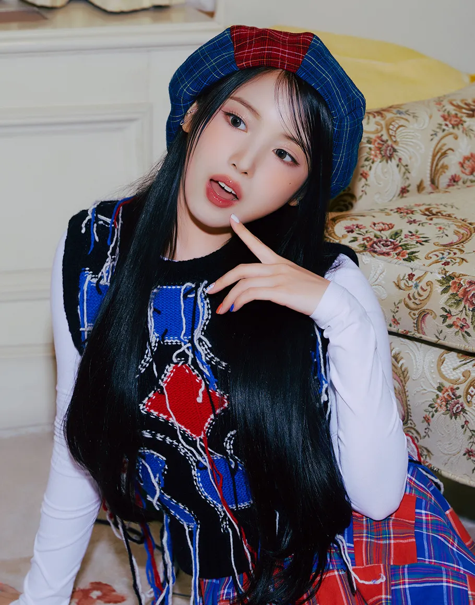
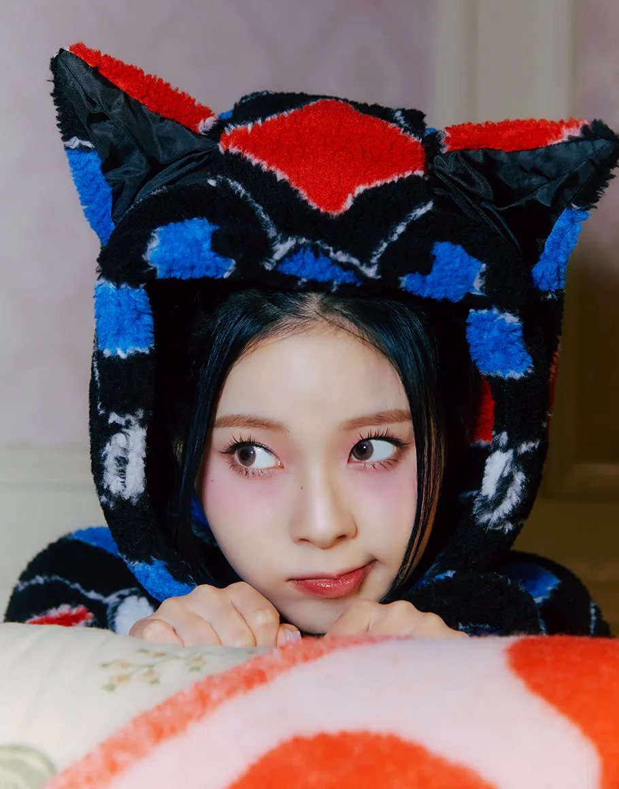

안녕하세요 보엠입니다.
오늘은 JYP의 차세대 걸그룹 NMIXX(엔믹스)의 특별한 크리스마스 시즌송 Funky Glitter Christmas를 소개해드리려고 합니다.

Funky Glitter Christmas 소개
Funky Glitter Christmas는 NMIXX의 첫 시즌송이자 'Intermixxion Single'의 첫 작품입니다. 이 곡은 펑키한 브라스와 피아노 리듬이 특징인 팝 장르로, 멤버들의 다양한 보컬 스타일을 잘 보여주는 곡입니다. 잭슨 파이브의 I want you back 과 비슷한 느낌도 많이 나네요. 뮤지컬적 내레이션과 재즈풍의 프리코러스가 포함된 다채롭게 구성되어 있으며, 기존 캐럴 멜로디를 독특하게 믹스한 새로운 해석과 함께 멤버들의 탄탄한 보컬 실력이 돋보이는 편곡의 크리스마스 시즌송입니다.
뮤직비디오는 마치 한 편의 화려한 영화처럼 연출되어, 크리스마스 파티를 즐기는 멤버들의 생기발랄한 모습을 담아냈습니다. 오색찬란한 파티 속에서 멤버들은 각자의 개성 넘치는 매력을 뽐내며, 7인 7색 드레스를 입고 춤추는 모습에서 연말 특유의 설렘과 밝은 에너지가 돋보입니다.
이 곡은 데뷔 이후 처음으로 팬들과 함께하는 크리스마스를 기념하는 특별한 선물의 의미를 담고 있습니다. 기존의 'O.O'나 'DICE'와는 또 다른 새로운 매력을 보여주며, 팬들에게 따뜻한 연말을 선사하고자 하는 마음을 담았습니다. Funky Glitter Christmas'는 NMIXX의 새로운 시도이자 색다른 매력을 보여주는 작품으로, 기존의 캐럴과는 다른 신선한 해석과 함께 멤버들의 뛰어난 보컬 실력을 확인할 수 있는 곡입니다.
Funky Glitter Christmas 가사
"Oh, yeah! Another year, another round
Are you ready?
Look at these sparkles in the air (uh-huh)
But this year (hoo-ooh), we gonna bring back the funk (yeah)
So let's go! Gonna be a funky glitter Christmas" (ooh!)
설레임으로 가득한 온 세상이 들뜬 밤
모두 여기로 모여봐, 우리만의 place (모두 모여)
Oh, this is my favorite
초콜릿 가득 뿌려진
눈사람 모양 쿠키까지도 완벽해 (that's right)
뻔한 안녕 hello 인사 대신 Feliz Navidad (ooh-ooh)
지구 반대편에 닿게 멀리 singing
Fa-la-la-la-la-la, la-la-la
모두 환히 빛날 glitter star
시작할까 party? (Yeah, yeah, yeah)
Oh, funky한 이 vibe 절대 놓치지 마 (ah)
하얀 눈처럼 추억들이 쌓여가는 Christmas time
Yeah, feel so good, so nice
온 세상이 shining bright
눈부시게 빛나
Funky glitter Christmas
Feel so good, so nice
반짝인 시간 속 we're together
함께라 더 빛나
Funky glitter Christmas (funky!)
Dance, dance, dance
Dancing on the floor (on the floor)
함께 춤추는 disco ball (wow)
멈출 수가 없어 자유로운 move
이 리듬 위를 groove
Santa 오늘 밤은 이미
You bring joy to my world (oh, yeah, yeah)
선물 같은 오늘을 영원히 지켜줘 (mu-ah)
저 별빛처럼 반짝이며 쏟아지는 Christmas time
Yeah, feel so good, so nice
온 세상이 shining bright
눈부시게 빛나
Funky glitter Christmas
Feel so good, so nice
반짝인 시간 속 we're together
함께라 더 빛나
Funky glitter Christmas (funky!)
서로의 눈에서 (we as one)
더 반짝이는 우릴 봐
언제나 늘 나의 곁에
Always be there
함께인 널 소원을 빌어
"Yeah"
"Hm?"
"Do you know what I want for Christmas?"
"Tell me!"
"I want my family and my friends
And a big party!" (ooh!)
우릴 빛나게 하는 이 음악 위
서롤 더 환히 빛내길
A funky glitter Christmas
Yeah, feel so good, so nice
온 세상이 shining bright (ooh-yeah)
눈부시게 빛나 (you'll be here)
Funky glitter Christmas (Christmas)
Feel so good, so nice (so nice)
반짝인 시간 속 we're together
함께라 더 빛나 (you'll be yeah)
Funky glitter Christmas (Christmas)
Na, na, na-na, na-na, na-na-na
눈부시게 빛나 (gonna be a)
Funky glitter Christmas babe
Na-na, na, na-na, na-na, na-na-na (to everybody)
함께라 더 빛나
Funky glitter Christmas
NMIXX 소개
NMIXX는 2022년 2월 22일에 데뷔한 JYP엔터테인먼트의 6인조 걸그룹입니다. 현재 멤버는 규진, 설윤, 릴리, 배이, 지우, 해원으로 구성되어 있습니다.
그룹명 NMIXX는 'Now(현재)', 'New(새로움)', 'Next(미래)'를 상징하는 'N'과 다양성과 조합을 의미하는 'MIX'의 결합으로, '새로운 조합'이라는 의미를 담고 있습니다.
멤버 구성
 
- 릴리: 호주 출신의 메인보컬로, 그룹의 최연장자 (2002년생)
- 해원: 팀의 리더이자 리드보컬 (2003년생)
- 설윤: 비주얼과 댄스를 담당 (2004년생)
- 배이: 그룹에서 가장 키가 큰 멤버 (2004년생)
- 지우: 메인댄서 (2005년생)
- 규진: 그룹의 막내 (2006년생)
NMIXX 의 매력을 느낄 수 있는 Tiny Desk Korea 콘서트 영상
한 번 들으면 빠져나올 수 없는 엔믹스 보컬의 매력을 그대로 느낄 수 있는 Tiny Desk Korea 의 콘서트 영상입니다. 이 영상에서 Love me like this, DASH, Run for roses, 별별별, Love is lonely 를 색다른 편곡으로 부르며 엄청난 보컬과 에너지를 보여줬습니다.
맺음말
2024년에도 엔믹스는 Fe3O4: BREAK와 Fe3O4: STICK OUT" 등의 앨범을 발매하며 활발한 활동을 이어가고 있습니다. 매 활동마다 새로운 음악적 시도와 성장을 보여주는 엔믹스는 K-pop의 미래를 이끌어갈 주역으로 자리매김하고 있습니다. 'Funky Glitter Christmas'는 단순한 시즌 송을 넘어 엔믹스만의 독특한 음악 색깔과 팬들을 향한 따뜻한 마음을 담은 특별한 선물이 되었습니다. 앞으로도 다채로운 음악과 퍼포먼스로 글로벌 음악 시장을 선도할 엔믹스의 행보가 기대됩니다.